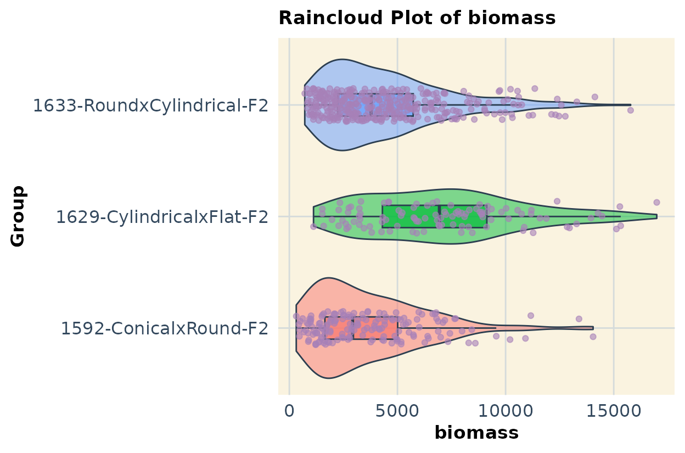
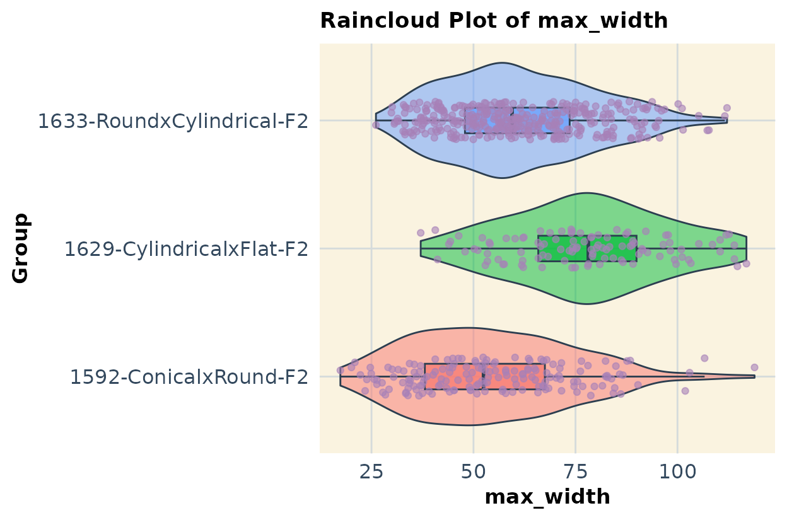
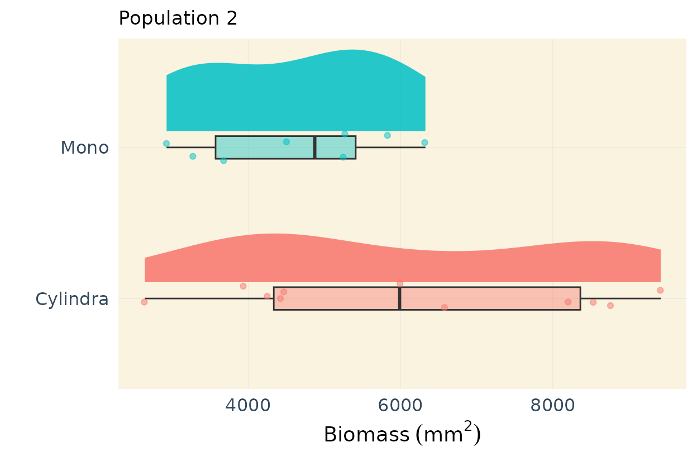
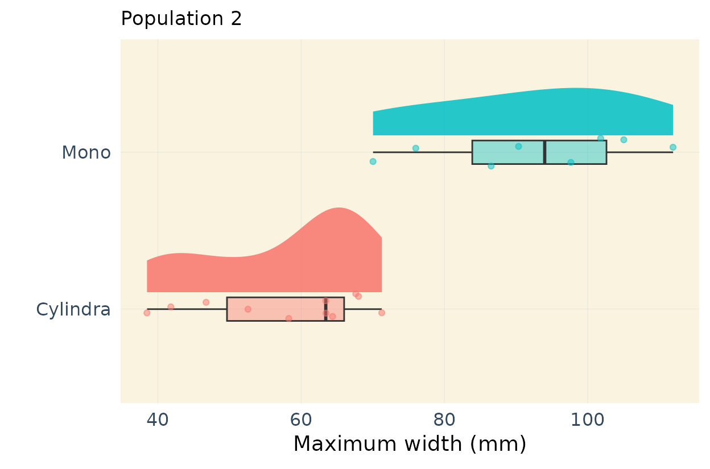

Intro
This script analyzes and prepares phenotype data for genetic mapping. Like any other phenotypic dataset there are some errors that we will go through and fix.
- Notes:
IDs 5053–5060 are missing values in the Geno field; assign “Program-Round-2”.
The Geno value “P1-OG-Mcgregor” should be “OG-Mcgregor”—actual parent identity is irrelevant at this stage.
The ID column is numeric; append “-F2” to each entry (e.g., “1001-F2”) to match genotype file formatting.
Phenotype IDs match genotype entries, though the latter include extra well/plate info (e.g., “1001-F2-Alpha-A1”).
After visualization, remove Parents, F1s, and population 1633 to format the phenotype file for R/qtl.
Data
# Phenotype
url1 <- "https://raw.githubusercontent.com/vegaalfaro/geneticMapRFiles/refs/heads/main/phenotype/phenotypes-binary.csv"
# Download file
if (!file.exists("local_copy_phenotypes-binary.csv")) {
download.file(url1, destfile = "local_copy_phenotypes-binary.csv")}
# Read
pheno <- read.csv("local_copy_phenotypes-binary.csv")Feel free to explore the phenotype file. This file is more than we need because it contains data for 3 populations and we will be only working with one.
Curation
#--- Data curation ----
# 1. Populate correctly the Geno columns for IDs 5053:5060
pheno$Geno[pheno$ID %in% 5053:5060] <- "Program-Round2"
# 2. Rename parents OGMacgregor and Program Round1
pheno$Geno <- str_remove(pheno$Geno, "P1-|P2-")
# 3. Change the ID column
pheno$IDs <- paste(pheno$ID, pheno$Gen, sep = "-")
# Most important variables
vars <- names(pheno)[c(9, 10, 16, 22, 23, 24, 26)]
response_vars <- vars #make a copy
# Print variables we'll be keeping or working with
vars
#> [1] "biomass" "max_width" "width_50"
#> [4] "length" "length_width_ratio" "shoulder_top"
#> [7] "tip_angle_top"Data Exploration
We begin by calculating basic statistics. The Geno
column indicates the group to which each individual belongs. There are
three groups with 107 or more individuals, these correspond to the
F2 populations. In addition, the dataset includes entries for
the parents and F1s of these segregating F2
populations.
# Means by the column genotype for one variable
means_LW <- pheno %>%
group_by(Geno) %>%
summarize(mean = mean(length_width_ratio),
sd = sd(length_width_ratio),
min = min(length_width_ratio),
max = max(length_width_ratio),
n = n()
)
head(means_LW, n=10)
#> # A tibble: 10 × 6
#> Geno mean sd min max n
#> <chr> <dbl> <dbl> <dbl> <dbl> <int>
#> 1 1592-ConicalxRound-F2 2.08 0.462 1.09 3.55 166
#> 2 1629-CylindricalxFlat-F2 1.52 0.407 0.79 2.56 107
#> 3 1633-RoundxCylindrical-F2 1.48 0.279 0.97 2.52 358
#> 4 Cylindra 2.63 0.456 1.91 3.28 11
#> 5 F1-1592 1.04 0.174 0.91 1.34 5
#> 6 F1-1633 1.44 0.212 1.19 1.73 8
#> 7 Mono 0.692 0.0897 0.59 0.88 8
#> 8 OG-Mcgregor 3.50 0.896 2.17 4.59 6
#> 9 Program-Round1 0.975 0.124 0.83 1.14 6
#> 10 Program-Round2 1.44 0.802 0.95 3.35 8Multiple traits
If you have multiple traits, below is a loop that would help you to estimate the statistics for each trait and save it in a list.
# List of columns/traits to compute statistics
response_vars <- vars
# Create empty vector to store results
response_var_stats <- list()
# Iterate for each column
for (col in response_vars){
# compute statistics
stats <- pheno %>%
group_by(Geno) %>%
summarize(across({{ col }}, list(
mean = mean,
sd = sd,
min = min,
max = max,
n = ~sum(!is.na(.))
)),
.groups = "drop")
# Add to the results list
response_var_stats[[col]] <- stats
}
print(response_var_stats)
#> $biomass
#> # A tibble: 10 × 6
#> Geno biomass_mean biomass_sd biomass_min biomass_max biomass_n
#> <chr> <dbl> <dbl> <dbl> <dbl> <int>
#> 1 1592-ConicalxRound… 3648. 2573. 321. 14046. 166
#> 2 1629-CylindricalxF… 7140. 3633. 1119. 16989. 107
#> 3 1633-RoundxCylindr… 4440. 2830. 715. 15780. 358
#> 4 Cylindra 6107. 2326. 2644. 9417. 11
#> 5 F1-1592 4787. 2458. 2121. 8134. 5
#> 6 F1-1633 7574. 4118. 2751. 14791. 8
#> 7 Mono 4633. 1241. 2930. 6327. 8
#> 8 OG-Mcgregor 5112. 2290. 3041. 8550. 6
#> 9 Program-Round1 5498. 1004. 4489. 7215. 6
#> 10 Program-Round2 3763. 3337. 1356. 11839. 8
#>
#> $max_width
#> # A tibble: 10 × 6
#> Geno max_width_mean max_width_sd max_width_min max_width_max max_width_n
#> <chr> <dbl> <dbl> <dbl> <dbl> <int>
#> 1 1592-Con… 54.4 19.6 17.4 119. 166
#> 2 1629-Cyl… 78.0 18.9 37.1 117. 107
#> 3 1633-Rou… 61.4 18.0 26.1 112. 358
#> 4 Cylindra 57.8 11.3 38.5 71.3 11
#> 5 F1-1592 78.8 23.2 49.8 107. 5
#> 6 F1-1633 81.1 17.5 53.2 107. 8
#> 7 Mono 92.4 14.5 70.0 112. 8
#> 8 OG-Mcgre… 47.7 7.69 37.4 56.7 6
#> 9 Program-… 86.3 9.55 73.2 103. 6
#> 10 Program-… 58.1 11.2 38.4 71.8 8
#>
#> $width_50
#> # A tibble: 10 × 6
#> Geno width_50_mean width_50_sd width_50_min width_50_max width_50_n
#> <chr> <dbl> <dbl> <dbl> <dbl> <int>
#> 1 1592-Conicalx… 29.6 14.9 7.31 73.5 166
#> 2 1629-Cylindri… 73.2 18.7 36.3 113. 107
#> 3 1633-RoundxCy… 54.1 16.3 20.5 98.0 358
#> 4 Cylindra 47.6 10.9 33.0 63.2 11
#> 5 F1-1592 75.5 25.1 42.7 105. 5
#> 6 F1-1633 74.9 18.2 44.1 103. 8
#> 7 Mono 90.9 13.4 69.9 107. 8
#> 8 OG-Mcgregor 31.1 11.9 11.5 45.5 6
#> 9 Program-Round1 84.2 10.7 68.8 102. 6
#> 10 Program-Round2 51.7 13.4 24.5 65.8 8
#>
#> $length
#> # A tibble: 10 × 6
#> Geno length_mean length_sd length_min length_max length_n
#> <chr> <dbl> <dbl> <dbl> <dbl> <int>
#> 1 1592-ConicalxRound-F2 112. 43.8 33.2 245. 166
#> 2 1629-CylindricalxFlat-F2 119. 42.2 38.7 228. 107
#> 3 1633-RoundxCylindrical-… 91.3 33.6 36.2 232. 358
#> 4 Cylindra 150. 29.9 96.4 202. 11
#> 5 F1-1592 79.4 15.7 63.5 100. 5
#> 6 F1-1633 118. 37.4 81.9 175. 8
#> 7 Mono 63.5 9.68 50.6 76.9 8
#> 8 OG-Mcgregor 168. 53.8 98.4 252. 6
#> 9 Program-Round1 83.2 8.02 72.6 94.9 6
#> 10 Program-Round2 85.5 62.8 56.2 241. 8
#>
#> $length_width_ratio
#> # A tibble: 10 × 6
#> Geno length_width_ratio_m…¹ length_width_ratio_sd length_width_ratio_min
#> <chr> <dbl> <dbl> <dbl>
#> 1 1592-Con… 2.08 0.462 1.09
#> 2 1629-Cyl… 1.52 0.407 0.79
#> 3 1633-Rou… 1.48 0.279 0.97
#> 4 Cylindra 2.63 0.456 1.91
#> 5 F1-1592 1.04 0.174 0.91
#> 6 F1-1633 1.44 0.212 1.19
#> 7 Mono 0.692 0.0897 0.59
#> 8 OG-Mcgre… 3.50 0.896 2.17
#> 9 Program-… 0.975 0.124 0.83
#> 10 Program-… 1.44 0.802 0.95
#> # ℹ abbreviated name: ¹length_width_ratio_mean
#> # ℹ 2 more variables: length_width_ratio_max <dbl>, length_width_ratio_n <int>
#>
#> $shoulder_top
#> # A tibble: 10 × 6
#> Geno shoulder_top_mean shoulder_top_sd shoulder_top_min shoulder_top_max
#> <chr> <dbl> <dbl> <dbl> <dbl>
#> 1 1592-Con… 86.7 86.6 0.665 651.
#> 2 1629-Cyl… 185. 104. 22.6 530.
#> 3 1633-Rou… 116. 80.5 10.9 614.
#> 4 Cylindra 141. 68.9 58.2 275.
#> 5 F1-1592 171. 102. 63.0 303.
#> 6 F1-1633 218. 104. 93.5 380.
#> 7 Mono 116. 48.2 37.5 203.
#> 8 OG-Mcgre… 35.6 33.1 0.886 92.5
#> 9 Program-… 162. 50.9 80.6 219.
#> 10 Program-… 87.9 62.8 29.1 224.
#> # ℹ 1 more variable: shoulder_top_n <int>
#>
#> $tip_angle_top
#> # A tibble: 10 × 6
#> Geno tip_angle_top_mean tip_angle_top_sd tip_angle_top_min tip_angle_top_max
#> <chr> <dbl> <dbl> <dbl> <dbl>
#> 1 1592… 19.1 12.9 0 60.0
#> 2 1629… 44.1 15.6 2.84 74.4
#> 3 1633… 41.4 12.8 1.89 68.4
#> 4 Cyli… 28.2 16.6 8.52 60.7
#> 5 F1-1… 46.4 25.4 3.40 66.8
#> 6 F1-1… 32.5 16.1 3.66 52.4
#> 7 Mono 69.4 6.94 59.1 77.9
#> 8 OG-M… 19.0 9.91 1.05 29.9
#> 9 Prog… 58.1 6.96 47.0 65.9
#> 10 Prog… 42.8 21.0 11.3 63.6
#> # ℹ 1 more variable: tip_angle_top_n <int>Subset
We are interested in population 2. There is more data
here than we need so will subset it.
# Population 2
Pop2 <- pheno[pheno$Geno %in% c("1629-CylindricalxFlat-F2",
"Cylindra",
"F1-1629",
"Mono"), ]Parents data
We can also subset the data for the F2parents. Including the parents in phenotypic evaluations is useful for comparison and helps interpret how they rank relative to the progeny of the segregating populations. It’s generally a good practice to include parental data when screening F2 individuals or, at the very least, to collect some phenotypic data on the parents for reference.
Multiple populations
If you have multiple populations and traits combined in a single dataset, you can use code like the example below to compare them. In this case, I show data for all three populations and illustrate the approach using two traits as an example.
plots2 <- list()
for (col in response_vars) {
plot <- ggplot(pheno %>% filter(Geno %in% c("1592-ConicalxRound-F2",
"1633-RoundxCylindrical-F2",
"1629-CylindricalxFlat-F2")),
aes(x = Geno,
y = !!sym(col),
fill = Geno)) +
geom_violin(alpha = 0.5, color = "#2C3E50") + # Rain (density)
geom_boxplot(width = 0.2, alpha = 0.7, color = "#2C3E50", outlier.shape = NA) + # Cloud (boxplot)
geom_jitter(width = 0.15, alpha = 0.6, size = 1.5, color = "#A680B8") + # Drops (data points)
labs(x = "Group", y = col, title = paste0("Raincloud Plot of ", col)) +
theme_minimal(base_size = 14) +
theme(
plot.title = element_text(size = 13, face = "bold"),
axis.text.x = element_text(size = 12, color = "#34495E"),
axis.text.y = element_text(size = 12, color = "#34495E"),
axis.title.x = element_text(size = 12.5, face = "bold"),
axis.title.y = element_text(size = 12.5, face = "bold"),
panel.background = element_rect(fill = "#FAF3E0", color = NA), # Light beige background
panel.grid.major = element_line(color = "#D5DBDB", size = 0.5),
panel.grid.minor = element_blank(),
legend.position = "none"
) + coord_flip()
plots2[[col]] <- plot
}
print(plots2[vars][1:2]) # Run this
#> $biomass
#>
#> $max_width
Publication ready plots for parent differences
In my previous linkage mapping projects, I’ve found it useful to
highlight differences among the parents (see, for example, this
publication: https://doi.org/10.1093/g3journal/jkae041). In this case
the parents are Cylindra and Mono, two table
beet varieties Below, I demonstrate how to create a high-quality,
publication-ready plot that shows the differences among the parental
types.
This code is designed to work for multiple traits but it would work for only one variable with minor refactoring. I show only 2 traits for example purposes.
# Population 2
response_vars <- vars
# Y-Axis labels
ylab <- c(expression(Biomass ~ (mm ^ 2)),
"Maximum width (mm)",
"Width 50 (mm)",
"Length (mm)",
"Length to width ratio (mm)",
expression("Shoulder area" ~ (mm ^ 2)),
"Tip angle (degrees)")
# Subset parents of population 2
parents2 <- pheno[pheno$Geno %in% c("Mono",
"Cylindra"
),]
plots_pa2 <- list() # Initialize the list
for (i in seq_along(vars)) {
col <- vars[i] # Extract column name
plot <- ggplot(parents2,
aes(x = Geno,
y = !!sym(col),
fill = Geno)) +
# Add half-eye distribution
ggdist::stat_halfeye(
adjust = 0.85,
alpha = 0.85,
width = 0.6,
.width = 0,
justification = -0.2,
point_colour = NA
) +
# Add boxplot
geom_boxplot(
width = 0.15,
alpha = 0.4,
outlier.shape = NA,
show.legend = FALSE
) +
# Add points
geom_point(
aes(color = factor(Geno)),
size = 1.5,
alpha = 0.5,
position = position_jitter(seed = 1, width = 0.1),
show.legend = FALSE # Remove legend for points
) +
# Labels and aesthetics
labs(x = "",
y = ylab[i], # Correctly indexing ylab
title = "Population 2"
) +
theme_minimal(base_size = 14) +
theme(
plot.title = element_text(size = 13),
axis.text.x = element_text(size = 12, color = "#34495E"),
axis.text.y = element_text(size = 12, color = "#34495E"),
panel.background = element_rect(fill = "#FAF3E0", color = NA), # background
panel.grid.major = element_line(color = "#D5DBDB", size = 0.1),
panel.grid.minor = element_blank(),
legend.position = "none"
) +
coord_flip()
plots_pa2[[col]] <- plot # Store plot in the list
}
# Check stored plots
plots_pa2[1:2] # Run this
#> $biomass
#>
#> $max_width